ТИПЫ ПРОТЕЗОВ
Протезы – это конструкции, которые служат восстановлению утраченных функций и внешнего вида ампутированной конечности пациента. Протезы изготавливаются индивидуально, их конструкция и материалы определяются медицинскими показаниями, уровнем активности протезируемого.
Немодульные
Модульные
Купальные
С микропроцессорным управлением

Немодульные или каркасные протезы.
Основные функции
- Недостаточные функциональные возможности
- Использование для пациентов низкого уровня активности или пожилых

Система модульной конструкции при протезировании была разработана в 1969 г. немецкой фирмой Отто Бокк.
Основные функции
- Восстановление натурального вида утерянной конечности
- Удобство в пользовании
- Увеличение безопасности в процессе эксплуатации
- Расширение функциональных возможностей
Протезы для купания изготавливаются из водостойких комплектующих: коленных шарниров, стоп, клапанов, замков и лайнеров.
Основные функции
- Недостаточные функциональные возможности
- Использование для пациентов низкого уровня активности или пожилых

Протезы бедра модульные с микропроцессорным управлением относятся к высоко функциональным видам протезов.
Основные функции
- Повышение уровня двигательной активности
- Улучшение статики опорно-двигательного аппарата, кинематики и динамики ходьбы